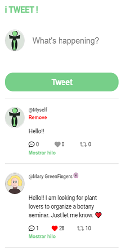

Un clon de Tweeter
Este projecto forma parte del curso "Frontend Developer Career Path" realizado en Scrimba
He disfrutado mucho creando este clon de Tweeter. Con él es posible enviar Tweets y eliminarlos. También responder, marcar como favoritos y retweetear.